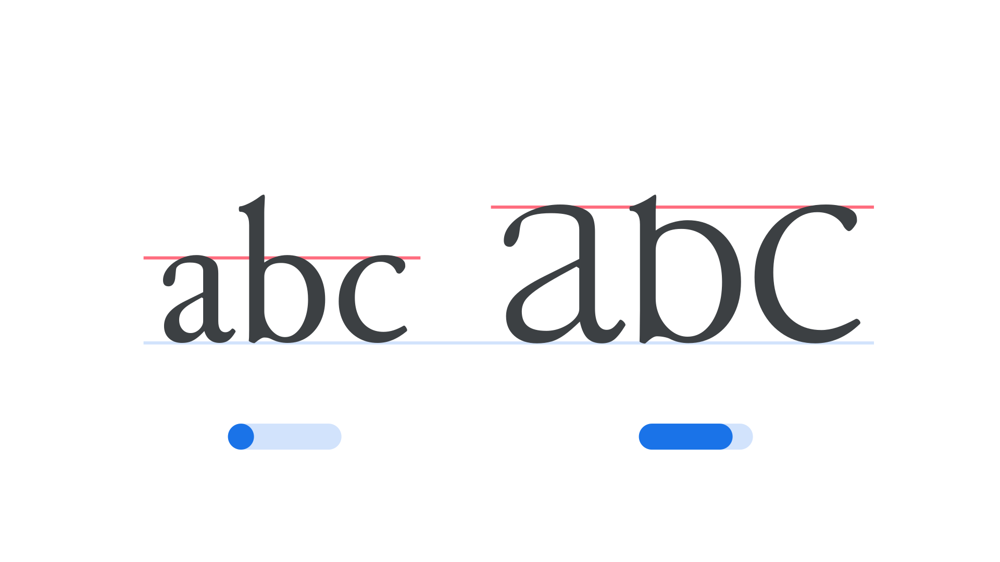

Enlarge axis (ENLA)
By Google Fonts Knowledge contributors · Google Fonts Knowledge.
Original article · Source on GitHub · CC BY-SA 4.0. Text, illustrations and existing credits reproduced from the licensed Knowledge repository. Open Shelf adapted the layout and links; these adaptations are also CC BY-SA 4.0. No endorsement implied.
“Enlarge” (ENLA in CSS) is an axis found in some variable fonts that scales certain lowercase letters up to a size between ordinary lowercase and full capitals. It’s modeled on “enlarged minuscules”: lowercase-shaped letters set larger than the surrounding text, which medieval scribes used to mark the start of a sentence.
The Google Fonts CSS v2 API defines the axis as:
| Default: | Min: | Max: | Step: |
|---|---|---|---|
| 0 | 0 | 100 | 0.01 |

Typeface: Junicode
At 0 (Normal), the affected letters render at their ordinary lowercase size. At 100 (Enlarged), they grow to a height between the x-height and the cap height. Rather than simply scaling up a lowercase glyph—which would make its strokes look too heavy next to the surrounding text—moving along the Enlarge axis reshapes each letter’s proportions so its stroke weight stays consistent with the rest of the typeface.
The axis is intended for sentence-initial letters, echoing a convention found in medieval manuscripts, but it can be applied to any character for a similar effect.
This axis was first introduced in the Junicode typeface, a font designed for medievalists, linguists, and other scholars.